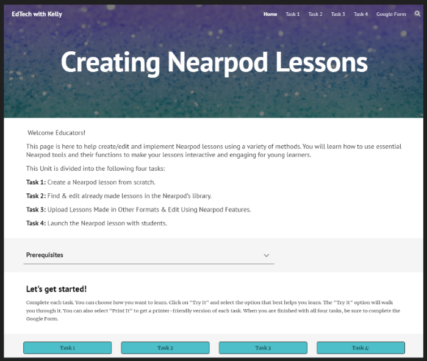

Educational Website
This learner-paced unit is divided into four parts. It was created to help teachers learn how to create and/or edit interactive slide-based lessons to engage their young learners on Nearpod.
Micro-Learning Video
In under 3 minutes, this video teaches simple elements that lead to the execution of the famous Michael Jackson move, The Moonwalk, also known as the backslide.
How-To Video
This video was made to help teachers navigate the process of setting up break-out rooms for distance learning. The video is divided into three parts; Before the meeting, During the meeting as well as an alternative method.
E-Learning Module
This is lesson two of a student-paced e-Learning module that is divided into 7 small lessons. Through these tasks, students learn to identify and name 5 vowels, distinguish between their long and short vowel sounds, and use long and short vowel sounds in words.